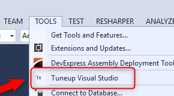

Configuring Visual Studio
In this document we'll detail how we configure Visual Studio 2017 to make the most out of it while working with large migrated applications.
Although this document was written with Visual Studio 2017 in mind, most of it is also relevant to previous versions of Visual Studio.
A - Visual Studio Extentions
We have created am Extensions Bundle for your use if you're using VS2017.
You can download it from: Extensions Bundle
If you are using Visual studio 2015, please install the extentions manually and proceed to item B in this document.
After you install the bundle
Please run the Visual Studio Tuneup utility at "Tools\Tuneup Visual Studio"

if you can't find this menu entry, please install the extentions manually
B - Other important settings that improve the performance and experience in Visual Studio
The following settings are in the "Tools\Options" menu

B.1 - "Debugging" Tab
B.1.1 - Uncheck "Warn if no user code on launch (Managed only)"

Eliminates the "Symbols for the module 'ENV.dll' were not loaded" message you get every time you run the code

B.1.2 - Uncheck "Enable Edit and Continue"

Allows you to edit your code, while the application is running
B.1.3 - Uncheck "Enable Diagnostic Tools while debugging"

Improves performance when running in Debug
B.2 set "Automatically Populate Toolbox" to False
In the "Windows Forms Designer" tab

Improves performance after each build
B.3 Disable IntelliTrace
- Go to the "IntelliTrace" Tab
- Uncheck the "Enable IntelliTrace" checkbox

Improves performance when running in Debug
B.4 Disable Test Flags (VS2017 only)
- Go to the "Tests" Tab
- Uncheck
Discover tests in real time from source files

B.5 Check "Collapse #regions when collapsing to definition" (VS2017 only)
- Go to the "Text Editor\C#\Advanced" Tab
- Check the "Collapse #regions when collapsing to definition" check box, under "Outlining"

Improves performance
C - Disable "Preview Selected Item"
In the "Solution Explorer" window make sure that the "Preview Selected Item" Icon is not checked (highlighted)

D - Add the parameter information toolbar item
Open any class
On the toolbar
Click on the icon highlighted in the image as 2

Select "Add or Remove Button"
Select the "Parameter Info" Tool box item.
This adds the following toolbox item, that will show you the parameter information for a method you are parked on


E - Configure the "GoTo" window
Go To the "Edit\Go To\Go To All..." menu item in VS2017

in VS2015 the menu is called "Edit\Navigate To..."
Click the "Settings" button

Uncheck the "Use Preview Tab" CheckBox
Check the "Show details" CheckBox
F Uncheck the two checkboxes in the"Search options"
- Open the solution explorer
- Press the combo down arrow button to open the search options
- Uncheck the two checkboxes

Improves search performance
G - Configure the "Error List..." Window
- Go to "View\Error List" menu

- Uncheck the "Warnings" tab by clicking on it (Our preference, not mandatory)
- Uncheck the "Messages" tab by clicking on it (Our preference, not mandatory)
- Set the combo to "Build Only"

H - Recommended extentions
We would like to recommend the following extensions to you:
- Viasfora, click to download - see Our Review
- Stack Trace Explorer, click to download - see Our Review
Previous Next
Help us improve, Edit this page on GitHub
or email us at info@fireflymigration.com